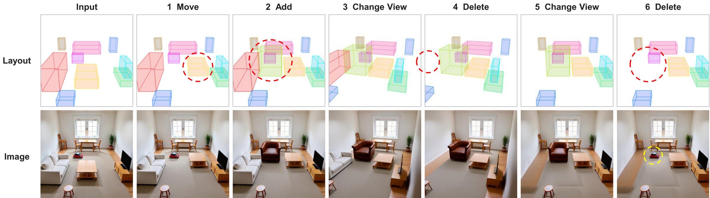
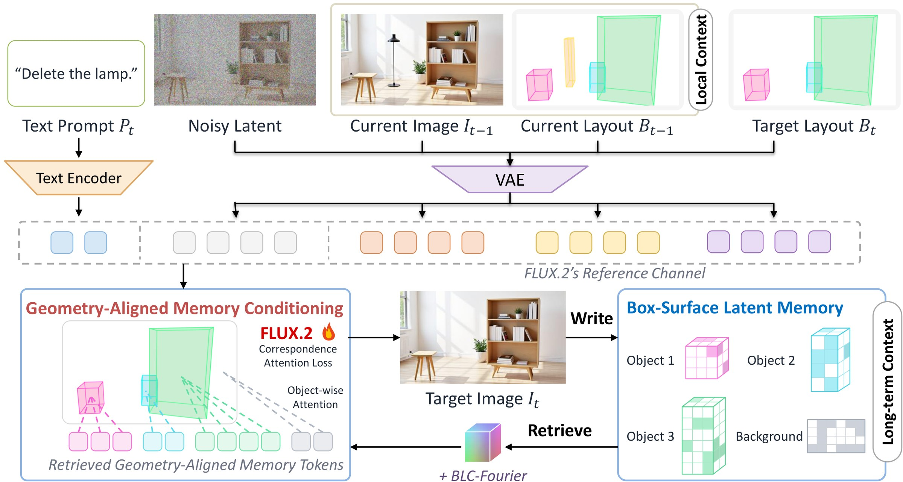
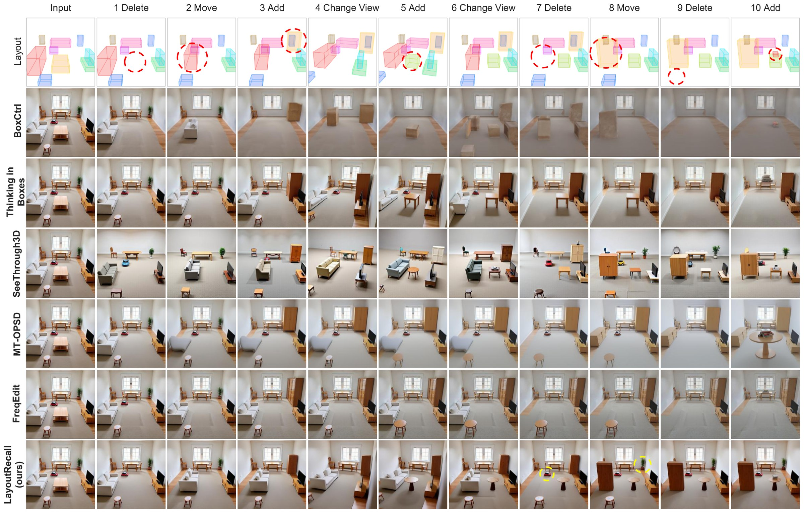
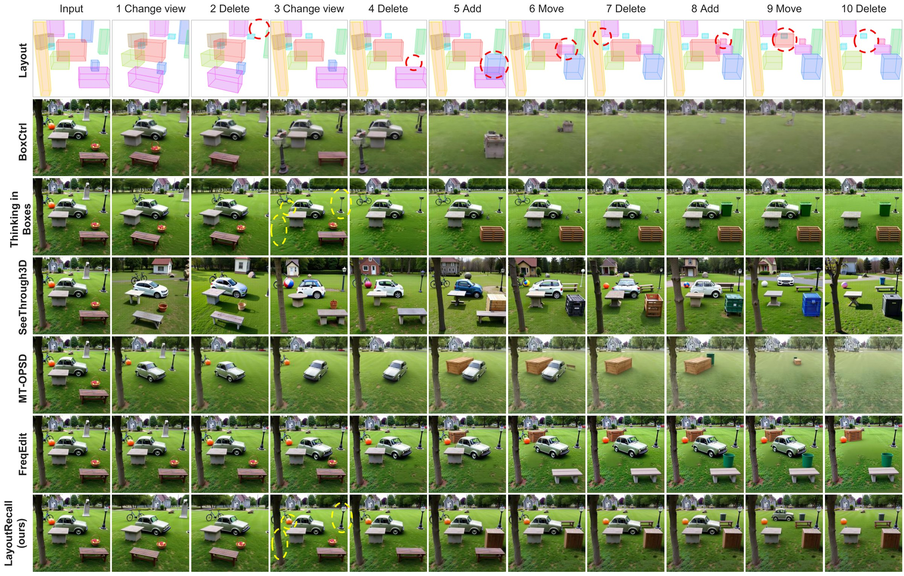

LayoutRecall: Preserving Appearance in Multi-Round 3D Layout-Controlled Image Editing

Abstract
3D layout-controlled image editing gives users explicit control over object placement and camera viewpoint. In a sequence of edits, however, the latest image can lose the appearance of an object when it is occluded or leaves view. The target layout specifies where the object should reappear, while its appearance must be recovered from earlier observations. We introduce LayoutRecall, a multi-round editor that stores and reuses appearance in the local coordinate systems of 3D boxes. Box-Surface Latent Memory retains image latents on box faces and retrieves them along rays in the target view. Geometry-Aligned Memory Conditioning supplies the retrieved tokens to a FLUX.2 editor using target-view positions, shared box-local embeddings, and object-wise attention. A correspondence loss encourages the editor to attend to matching observations during denoising. We also introduce LayoutLoop, a multi-round 3D layout-controlled image editing benchmark with calibrated layouts and designed revisits. We conduct extensive experiments on LayoutLoop and real-scene data to verify the ability of our method.
Method

Multi-Round Editing Results


Table 3. Multi-round editing on LayoutLoop. LayoutRecall performs best on every metric except editing accuracy, where it ranks second. SeeThrough3D scores higher there because it regenerates each target from the layout and discards the original content, which also gives it by far the lowest preservation scores.
| Method | Quality | Editing Accuracy | Preservation | Consistency | ||||
|---|---|---|---|---|---|---|---|---|
| |ΔMUSIQ| ↓ | mIoU ↑ | Succ. ↑ | PSNR ↑ | SSIM ↑ | LPIPS ↓ | Back ↑ | Self ↑ | |
| BoxCtrl | 18.65 | 0.485 | 0.540 | 17.16 | 0.688 | 0.491 | 15.46 | 0.287 |
| Thinking in Boxes | 4.32 | 0.470 | 0.568 | 18.03 | 0.676 | 0.430 | 14.96 | 0.570 |
| SeeThrough3D | 7.36 | 0.618 | 0.816 | 9.24 | 0.411 | 0.816 | 9.48 | 0.340 |
| MT-OPSD | 10.79 | 0.149 | 0.180 | 15.46 | 0.650 | 0.504 | 12.98 | 0.414 |
| FreqEdit | 4.98 | 0.280 | 0.288 | 16.76 | 0.621 | 0.424 | 15.14 | 0.596 |
| LayoutRecall (ours) | 2.19 | 0.608 | 0.732 | 24.97 | 0.802 | 0.245 | 23.75 | 0.733 |
Table 4. Multi-round editing on real scenes. LayoutRecall performs best on every metric except Back, where it ranks second. BoxCtrl replaces each scene with an empty background in the first round; the near-static output inflates its PSNR and Back scores but gives by far the worst |ΔMUSIQ|.
| Method | Quality | Editing Accuracy | Preservation | Consistency | ||||
|---|---|---|---|---|---|---|---|---|
| |ΔMUSIQ| ↓ | mIoU ↑ | Succ. ↑ | Survive ↑ | PSNR ↑ | LPIPS ↓ | Back ↑ | Self ↑ | |
| BoxCtrl | 26.05 | 0.442 | 0.530 | 0.191 | 29.86 | 0.113 | 31.42 | 0.215 |
| Thinking in Boxes | 4.42 | 0.372 | 0.430 | 0.421 | 28.18 | 0.075 | 19.96 | 0.500 |
| SeeThrough3D | 7.02 | 0.522 | 0.710 | 0.604 | 12.74 | 0.518 | 15.52 | 0.453 |
| MT-OPSD | 12.74 | 0.118 | 0.130 | 0.104 | 26.66 | 0.090 | 19.80 | 0.394 |
| FreqEdit | 4.36 | 0.160 | 0.150 | 0.191 | 26.27 | 0.092 | 25.13 | 0.491 |
| LayoutRecall (ours) | 2.96 | 0.662 | 0.830 | 0.838 | 32.84 | 0.037 | 28.80 | 0.756 |
BibTeX
@article{chi2026layoutrecall,
title = {LayoutRecall: Preserving Appearance in Multi-Round 3D Layout-Controlled Image Editing},
author = {Chi, Yankuan and Lin, Xin and Yang, Baihan and Liu, Yuheng and Li, Jason and Nguyen, Truong},
journal = {arXiv preprint arXiv:2611.33885},
year = {2026}
}